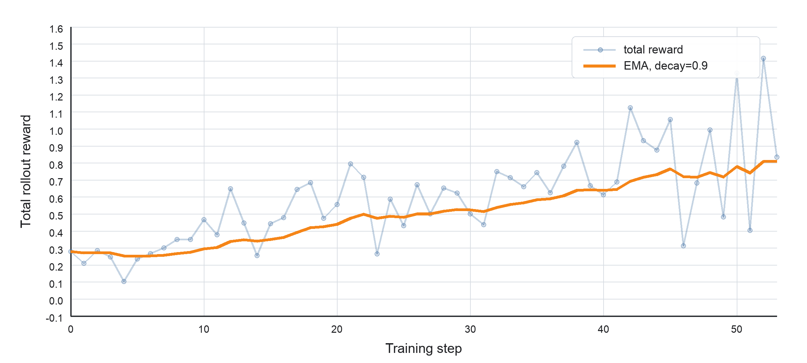
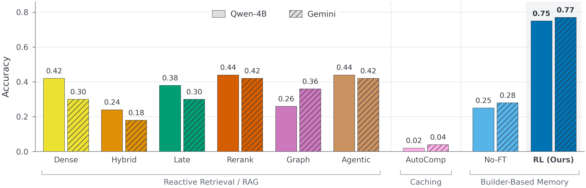
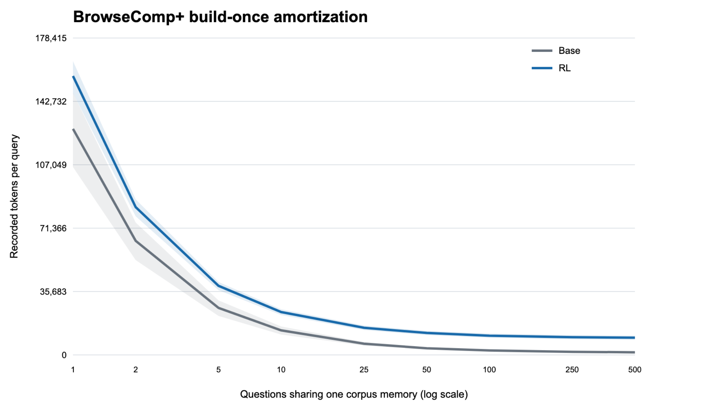
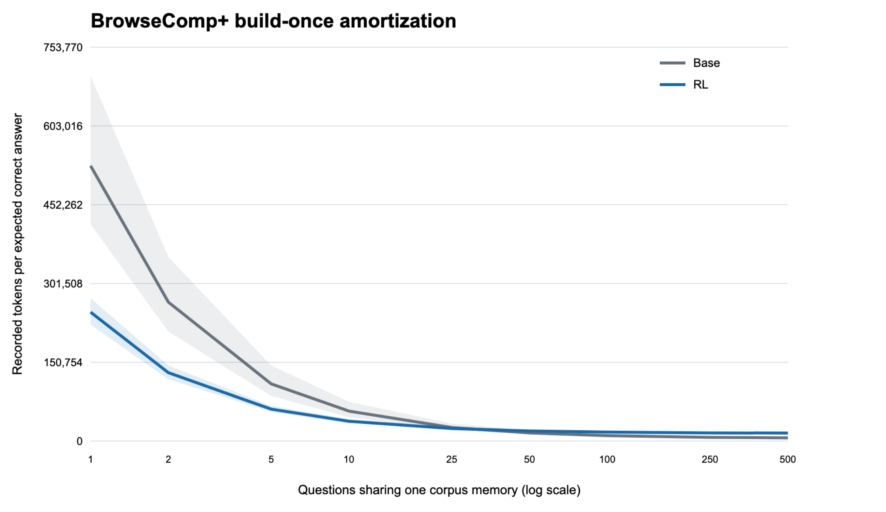

Reasoning over long document contexts remains a challenge for large language models (LLMs). Standard retrieval methods are inherently reactive, bottlenecking agents with complex, cross-document reasoning at inference time. Existing approaches that precompute corpus structure, such as knowledge graphs, often fall short because they rely on rigid heuristics. Instead, can we allow agents to perform anticipatory directed curation: proactively reorganizing unstructured document corpora to efficiently serve diverse future queries. This pre-computation synthesizes and restructures information within documents in advance, significantly improving an answering agent's downstream performance. While agentic harnesses (e.g., Claude Code) are heavily trained to navigate and extend filesystems while solving the task currently in front of them, they do not pre-construct reusable workspaces in anticipation of future queries. We introduce Librarian Agents, a novel framework that restructures unstructured corpora into filesystem-based workspace arranged around the operations that LLM agents already perform well, such as reading summaries and following links. Librarian Agents is optimized to maximize downstream query success rate via end-to-end reinforcement learning. Empirically, Librarian Agents improves accuracy over the best performing baseline by 33 points on BrowseComp+ and additionally generalizes to out-of-distribution corpora such as BRIGHT with a 31 point increase on average.
Librarian Agents: Training LLMs to Curate Long-Context Workspaces that Anticipate Future Queries
Abstract
Anticipatory workspace construction
Answering new queries over a shared corpus can require repeated search and cross-document synthesis. We train a builder agent to curate a reusable filesystem before future queries are observed, shifting part of this computation into anticipatory workspace construction.

During construction, the builder synthesizes files and organizes them into a hierarchy with references to the original corpus. During answering, a fixed agent navigates the same workspace to address successive queries.
- Coverage and navigation
- Faithful fallback
- Amortized reuse
Optimizing the builder with reinforcement learning
We formulate construction as a finite-horizon Markov decision process (MDP) over filesystem augmentations. We optimize the builder with Group Relative Policy Optimization (GRPO), using periodic changes in answerability and terminal answer correctness while keeping the answering agent fixed.

- Create
- Synthesize a file with references to its sources
- Merge
- Create a parent summary linking related files
- Delete
- Remove redundant synthetic files; retain raw documents
- Stop
- Terminate construction and return the current workspace
Dense reward signal

Answerability is probed every eight builder turns. Changes between consecutive probes provide intermediate rewards, supplemented by terminal answer correctness.
Training configuration
A Qwen3.5-4B builder is trained with GRPO on 680 BrowseComp+ tasks, using LoRA rank 32, a learning rate of 4 × 10−5, batch size 8, and four rollouts per group. Construction runs for up to 32 builder turns, with at most four answerability probes. A fixed Qwen3.5-35B-A3B executor performs file creation and merging; a fixed Gemini 3.1 Flash Lite model compacts long histories. The answering agent and evaluator remain fixed.
The primary run optimizes answerability changes and terminal answer correctness with an undiscounted return. It includes no explicit rewards for navigation cost, construction cost, or filesystem structure. Training queries are hidden from the builder, and evaluation questions are never used for construction or checkpoint selection.

Performance on BrowseComp+
Mean accuracy improvement over the strongest baseline for each answering agent.

BrowseComp+ results and evaluation protocol
We evaluate 50 held-out corpus-level tasks with fixed answering agents. Failed constructions and answer generations are included in the accuracy denominator.
| Answering agent | Dense | Hybrid | Late interaction | Rerank | GraphRAG | Agentic RAG | AutoComp. | No FT | Librarian |
|---|---|---|---|---|---|---|---|---|---|
| Qwen3.5-4B | 0.42 | 0.24 | 0.38 | 0.44 | 0.26 | 0.44 | 0.02 | 0.25 | 0.75 |
| Gemini 3.1 Flash Lite | 0.30 | 0.18 | 0.30 | 0.42 | 0.36 | 0.42 | 0.04 | 0.28 | 0.77 |
Memory reuse and amortized cost
Workspace construction incurs an upfront cost shared across queries over the same corpus. We report both recorded tokens per query and tokens per expected correct answer to account for differences in answer quality.


At 10 queries per corpus, the RL-trained builder requires 33.8% fewer recorded tokens per expected correct answer than the base builder. Raw tokens per query remain higher.
Construction costs and reuse analysis
Construction cost on BrowseComp+
| Memory / retrieval | Accuracy | Construction tokens |
|---|---|---|
| GraphRAG | 0.36 | 11,923 |
| AutoCompaction | 0.04 | 501,637 |
| Builder (no fine-tuning) | 0.28 | 127,683 |
| Librarian Agents | 0.77 | 178,926 |
Accuracy uses the fixed Gemini 3.1 Flash Lite answering agent; construction cost is measured in tokens per corpus.
Multi-query evaluation
We evaluate 443 fixed synthetic queries across 50 corpora (7–10 per corpus), reusing each constructed filesystem. Accuracy is 24.2% with the base builder and 63.7% after RL fine-tuning.
| Builder | Accuracy | Answer tokens / query | Files / query |
|---|---|---|---|
| Base builder | 0.242 ± 0.036 | 1,238 ± 155 | 2.72 ± 0.35 |
| Librarian Agents | 0.637 ± 0.029 | 9,346 ± 596 | 26.90 ± 1.70 |
The reuse curves are projections based on recorded construction and navigation costs. At 20 queries per corpus, the projected cost for Librarian Agents is approximately 18,000 tokens per query, including construction.
The RL/base ratio in tokens per expected correct answer is 0.662 at ten queries per corpus (95% CI: 0.504–0.836). Paired corpus-bootstrap estimates place the crossover at 31 queries (95% CI: 18–54); at larger reuse loads, the base builder has lower cost per expected correct answer.
Zero-shot transfer to BRIGHT
The builder trained on BrowseComp+ is evaluated on AoPS, Biology, and Stack Overflow without task-specific fine-tuning. Each domain’s workspace is constructed without access to evaluation queries.
Mean pass@1 improvement over the strongest baseline (dense retrieval), averaged across three domains.
| Domain | Dense | Librarian |
|---|---|---|
| AoPS | 31.5 | 36.0 |
| Biology | 19.5 | 34.5 |
| Stack Overflow | 11.5 | 85.5 |
| Average | 20.8 | 52.0 |
Pass@1 accuracy (%), averaged over 50 questions per domain. A single filesystem is reused across all queries and sampled answers within each domain.
BRIGHT results and additional transfer evaluations
Pass@1 and pass@3
| Domain | Dense pass@1 (%) | Librarian pass@1 (%) | Dense pass@3 (%) | Librarian pass@3 (%) |
|---|---|---|---|---|
| AoPS | 31.5 ± 6.0 | 36.0 ± 5.6 | 38.0 ± 6.9 | 50.0 ± 6.9 |
| Biology | 19.5 ± 4.8 | 34.5 ± 4.9 | 29.0 ± 6.1 | 57.0 ± 6.5 |
| Stack Overflow | 11.5 ± 3.9 | 85.5 ± 3.9 | 17.0 ± 5.2 | 93.5 ± 3.4 |
| Average | 20.8 ± 2.9 | 52.0 ± 2.8 | 28.0 ± 3.5 | 66.8 ± 3.4 |
Results use a fixed Qwen3.5-4B answering agent. Pass@1 is mean per-response accuracy. Pass@3 is the unbiased estimate of the probability that at least one of three responses is correct, computed from four independent responses per question. Values are percentages with the paper’s reported uncertainties.
All retrieval and memory baselines
| Domain | BM25 | Dense | Hybrid | Rerank | Agentic | Late interaction | GraphRAG | AutoCompaction | Librarian |
|---|---|---|---|---|---|---|---|---|---|
| AoPS | 30.5 ± 5.9 / 37.0 ± 6.8 | 31.5 ± 6.0 / 38.0 ± 6.9 | 33.0 ± 6.4 / 37.0 ± 6.8 | 32.0 ± 6.1 / 37.5 ± 6.9 | 28.5 ± 5.6 / 37.0 ± 6.8 | 28.5 ± 5.5 / 37.5 ± 6.9 | 12.5 ± 4.4 / 15.5 ± 5.1 | 6.0 ± 3.4 / 6.0 ± 3.4 | 36.0 ± 5.6 / 50.0 ± 6.9 |
| Biology | 17.5 ± 4.6 / 26.0 ± 6.0 | 19.5 ± 4.8 / 29.0 ± 6.1 | 14.0 ± 4.3 / 20.5 ± 5.6 | 14.0 ± 4.1 / 23.0 ± 5.6 | 17.0 ± 4.5 / 25.5 ± 5.9 | 18.0 ± 4.9 / 24.5 ± 6.0 | 5.0 ± 2.9 / 6.0 ± 3.4 | 6.0 ± 3.4 / 6.0 ± 3.4 | 34.5 ± 4.9 / 57.0 ± 6.5 |
| Stack Overflow | 9.0 ± 3.3 / 15.5 ± 4.8 | 11.5 ± 3.9 / 17.0 ± 5.2 | 7.0 ± 2.4 / 15.5 ± 4.8 | 6.0 ± 2.6 / 11.0 ± 4.3 | 6.5 ± 2.5 / 14.5 ± 4.5 | 7.0 ± 2.5 / 14.5 ± 4.8 | 1.5 ± 1.1 / 3.5 ± 2.5 | 1.5 ± 1.5 / 2.0 ± 2.0 | 85.5 ± 3.9 / 93.5 ± 3.4 |
| Average | 19.0 ± 2.7 / 26.2 ± 3.4 | 20.8 ± 2.9 / 28.0 ± 3.5 | 18.0 ± 2.7 / 24.3 ± 3.3 | 17.3 ± 2.6 / 23.8 ± 3.3 | 17.3 ± 2.5 / 25.7 ± 3.3 | 17.8 ± 2.6 / 25.5 ± 3.4 | 6.3 ± 1.8 / 8.3 ± 2.2 | 4.5 ± 1.7 / 4.7 ± 1.7 | 52.0 ± 2.8 / 66.8 ± 3.4 |
Nine additional domains
Additional transfer evaluations compare the RL-trained and base builders on 20 questions per domain. These experiments are separate from the primary BRIGHT retrieval-baseline comparison.
| Domain | Base accuracy (%) | Librarian accuracy (%) |
|---|---|---|
| Earth Science | 26.3 | 73.8 |
| Economics | 16.3 | 72.5 |
| Psychology | 32.5 | 72.5 |
| Robotics | 23.7 | 55.0 |
| Sustainable Living | 12.5 | 43.8 |
| LeetCode | 28.7 | 56.2 |
| Pony | 48.7 | 72.5 |
| TheoremQA Questions | 35.0 | 63.7 |
| TheoremQA Theorems | 38.8 | 56.2 |
Qualitative analysis
Effect of RL on workspace organization

For the same BrowseComp+ corpus, the RL-trained builder creates dedicated files that consolidate query-relevant evidence. The base builder produces a fragmented workspace that is harder for the answering agent to navigate.
Recovery through reference links

In this BrowseComp+ example, the synthetic workspace omits a relation needed to answer the query. The answering agent follows reference links to the relevant raw documents and recovers the missing evidence without enumerating the full corpus.
Filesystem structure ablation and workspace statistics
Controlled interventions on constructed workspaces isolate the role of hierarchical organization. Flattening preserves comparable accuracy but increases navigation tokens; shuffling semantic placement yields lower accuracy.
| Memory organization | Accuracy (%) | Navigation tokens |
|---|---|---|
| Original | 55.86 ± 2.58 | 3,635 ± 216 |
| Flattened | 57.70 ± 2.81 | 5,497 ± 356 |
| Shuffled | 51.72 ± 2.87 | 3,612 ± 221 |
Matched answering runs cover 435 questions across 49 corpora with completed filesystem snapshots. Standard errors are estimated with a corpus-cluster bootstrap. These accuracies are separate from the primary BrowseComp+ evaluation.
Final workspace statistics
| Evaluation | Builder | Active files | Clusters | Merged artifacts |
|---|---|---|---|---|
| BRIGHT (three-domain mean) | Base | 4.8 | 4.2 | 0.6 |
| BRIGHT (three-domain mean) | RL | 53.4 | 45.4 | 8.0 |
| BrowseComp+ (amortized) | Base | 3.2 | 2.7 | 0.6 |
| BrowseComp+ (amortized) | RL | 42.2 | 34.4 | 7.8 |
Counts summarize active synthetic files in the final constructed workspace, rather than files accessed during answering. These measures are diagnostic and are not explicit training rewards.
Discussion and future work
Our evaluation is limited to question answering over static corpora. Future work includes scaling construction to larger collections, maintaining workspaces as documents change, and jointly adapting builder and answering agents. Since synthetic files can omit relevant details, deciding when to access raw evidence remains an open problem.
BibTeX
@misc{singh2026librarianagents,
title = {Librarian Agents: Training LLMs to Curate Long-Context Workspaces that Anticipate Future Queries},
author = {Anikait Singh and Teresa Zhang and Yoonho Lee and Roshen Sanjay Nair and Aviral Kumar and Chelsea Finn},
year = {2026},
url = {https://librarian-agents.github.io/}
}